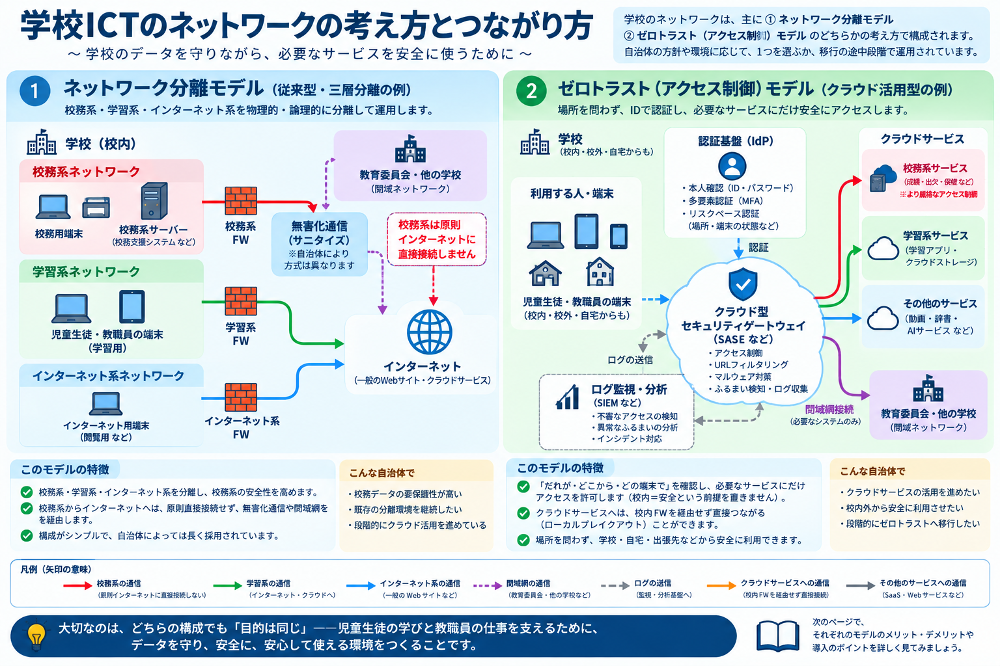
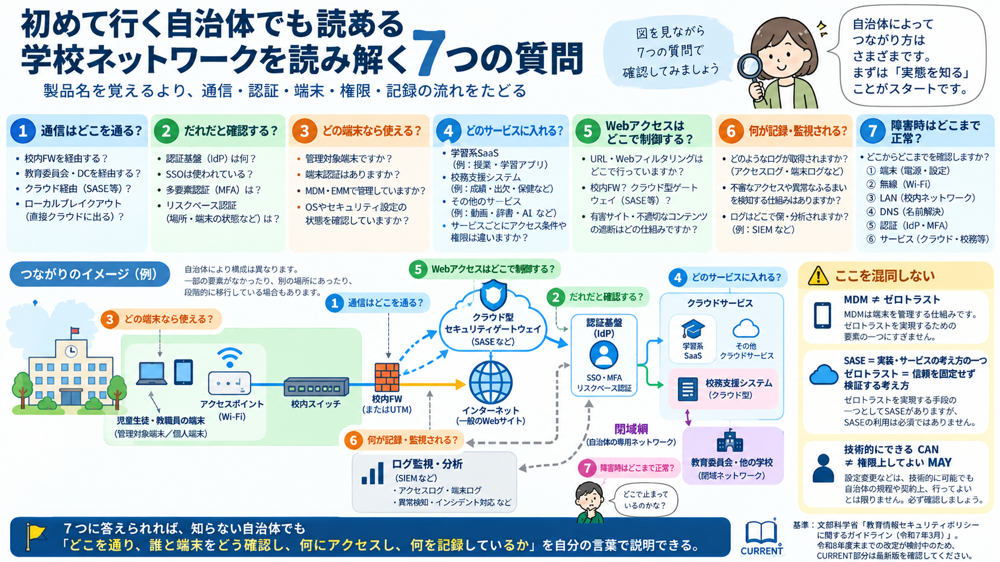

START
端末
PC・タブレット何をする？利用者が通信を始める場所です。Wi-Fi設定やネットワーク設定を持っています。
ここで問題があるとその端末だけつながらない、という形になりやすい。
ICT BASIC FITNESS / NETWORK
用語を暗記する前に、「端末からサービスまで、通信がどこを通っているか」を一本の地図として理解します。基礎は安定して学び、変わる情報はCURRENTとして別に更新します。
01 / BIG PICTURE
学校のネットワークは自治体によって構成が違います。最初に「ネットワーク分離」と「アクセス制御」という2つの考え方を見比べ、そのあと自分の自治体を7つの質問で読み解きます。

ネットワーク分離は「ネットワークを分ける」考え方、ゼロトラストは場所だけを信頼せずアクセスごとに確認する考え方です。SASEやMDMはゼロトラストそのものではありません。

7つに答えられれば、知らない自治体でもネットワーク構成を自分の言葉で説明するための入口ができます。
MEET THE NETWORK
「AP」「DHCP」「DNS」といった言葉は、最初から覚えていなくて大丈夫です。まずは、それぞれが何をする係なのか、そこで問題が起きると何ができなくなるのかを見てみましょう。
何をする？利用者が通信を始める場所です。Wi-Fi設定やネットワーク設定を持っています。
ここで問題があるとその端末だけつながらない、という形になりやすい。
何をする？端末をWi-Fiで校内ネットワークへつなぐ「無線の入口」です。
ここで問題があるとWi-Fiにつながらない、特定の教室だけ不安定、などが起こります。
何をする？IPアドレス、ゲートウェイ、DNSなど、通信に必要な設定を端末へ自動で渡します。
ここで問題があるとWi-Fiには接続したように見えても、正しく通信できないことがあります。
何をする？校内の端末やAPなどをつなぎ、LANの中で通信を中継します。
ここで問題があると特定の教室・フロア・系統だけ通信できないことがあります。
何をする？校内LANから別のネットワークへ通信を渡します。
ここで問題があると校内では通信できても、外部や別ネットワークへ進めません。
何をする？Webサイトなどの名前を、通信に使うIPアドレスへ結びつけます。
ここで問題があると回線自体は動いていても、名前を使ってWebサイトを開けないことがあります。
何をする？クラウドや教育委員会など、校外の通信先までデータを運びます。
ここで問題があると校内ネットワークは正常でも、外のサービスへ届きません。
何をする？学習アプリ、校務支援、Webサービスなど、利用者が最終的に使いたい機能を提供します。
ここで問題があるとインターネットは使えるのに、特定のサービスだけ使えないことがあります。
何をする？認証で「誰か」を確認し、認可で「何をしてよいか」を決めます。SSOやMFAもここに関係します。
ここで問題があるとサービスには届いているのにログインできない、ログイン後に必要な機能が使えないことがあります。
Wi‑Fiは、端末からAPまでの最初の区間です。マウス・イヤホン・プリンタ・提示装置など、端末の外につなぐ機器は、接続方法が複数あるため別の地図で整理します。
無線でつながる外部機器を見る →READ THE PICTURE
細かな用語を全部覚える前に、「何と何がつながっているか」を頭の中に描けることを目標にします。
タブレットからAPまでは電波でつながります。その先には、スイッチ、ルーター／FW、校外の回線など、見えない先にも通信の経路が続いています。
Wi-Fiは端末をネットワークへつなぐ方法の一つです。Wi-Fiにつながっていても、その先の経路やDNS、クラウドサービスなどに問題があれば目的のサービスは使えません。
「Wi-Fiが出ない」「Webは開く」「ログイン画面までは出る」など、できていることを確認すると、どこまで正常かを絞って考えられます。
名前 → 役割 → つながり → 止まったときの見え方の順で理解します。ここまで見えてから、IPアドレス・DHCP・DNSなどをもう少し正確に学びます。
NOW, DIAGNOSE
全部を一度に調べる必要はありません。目に見える現象から、正常だと分かるところと、まだ分からないところを分けます。
まず端末とAPの間を疑う。電波、接続先、端末側の設定などを確認する。
APより先へ進めているかを見る。IP設定、LAN、外への経路、DNSなどはまだ未確認。
インターネット全体より、サービス側・フィルタリング・経路など対象を絞って考えられる。
アカウントやMFAを確認する。ログイン後に機能を使えない場合は権限も確認する。認証先への通信障害もあり、回線が全面的に正常とは断定しない。
この並びは「通信パケットが必ずこの順番で進む」という意味ではありません。障害時に、どの範囲まで正常かを考えるための確認地図です。
02 / FOUNDATION
ここからは用語を一つずつ暗記するのではなく、1台のタブレットがネットワークに参加するときに「何が必要になるか」を順に見ます。
NETWORK SETTINGS
ネットワークの中でデータを送り合うには、端末が自分の情報と、外へ出る方法、名前を調べる方法を知る必要があります。
「このネットワークでは、この設定を使ってね」と必要な情報を端末へ渡します。
ここではIPv4とDHCPによる自動設定を例にします。IPv6や手動設定など、別の方法もあります。以下の番号は説明用です。実際の端末に入力する設定値ではありません。
WHO AM I?
同じ教室にタブレットが30台あっても、データを届ける相手を区別しなければなりません。IPアドレスは、通信で使う「住所にあたる番号」です。送る側にも、受け取る側にもあります。
例えば印刷するときは、プリンターのIPアドレスを宛先にしてデータを送ります。プリンターからの返事は、タブレット側へ戻ります。
うまく設定できないと：Wi-Fiには接続していても、そのネットワークで正しく通信できないことがあります。
LOCAL OR OUTSIDE?
分けられたネットワークのまとまりを「サブネット」といいます。IPv4では、自分のIPアドレスと「サブネットマスク」を組み合わせて、相手が同じまとまりにいるかを判断します。
例えば、自分が 192.168.10.25、マスクが 255.255.255.0（/24） なら、192.168.10.50 は同じまとまり、192.168.20.50 は別のまとまりです。このマスクの場合は、先頭の3つの数字で範囲が決まります。
同じ学校・同じ教室でも、教員用と児童生徒用が別のサブネットの場合があります。「直接」はルーターを経由しないという意味で、APやスイッチは通ります。実際に通信できるかは、接続構成やアクセス制御にもよります。
設定が合わないと：本来届くはずの相手を「外」と判断するなど、正しい経路を選べなくなることがあります。
HOW DO I GET OUT?
別のネットワークへ送るとき、端末は経路の設定を見ます。宛先に合う、より具体的な経路がない場合の渡し先が「デフォルトゲートウェイ」です。例えば、この端末の設定では192.168.10.1がその渡し先になります。
ここへ渡せないと：校内の一部とは通信できても、インターネットや別ネットワークへ進めないことがあります。
WHERE IS IT?
人はWebサイトやサービスを名前で覚えますが、IP通信では通信先のIPアドレスが必要です。DNSは、名前に対応する通信先を調べる仕組みです。
名前解決できないと：ネットワークの経路自体は生きていても、普段使う名前ではWebサイトを開けないことがあります。
NOW DHCP MAKES SENSE
30台分の設定を一つずつ入力して管理する負担を減らすために、DHCPを使います。DHCPサーバーが、IPアドレス・サブネットマスク・ゲートウェイ・DNSサーバーなどの設定を端末へ渡します。Webを見るたびにデータがDHCPサーバーを通るわけではありません。
1 / 接続先を比べるWi-Fiの名前（SSID）が同じか、同じサービスで同じ症状になるかを確認します。
2 / 設定を比べる確認する権限の範囲で、IPアドレス・サブネットマスク・ゲートウェイ・DNSサーバーを見ます。IPアドレスは端末ごとに異なるのが通常です。隣の端末の番号をそのままコピーしてはいけません。
3 / 分かったことを渡す「この端末だけ」「接続先」「表示された設定」「発生時刻」を担当者へ伝えます。症状だけでDHCPサーバーの故障と決めつけず、届くまでの経路や設定も確認してもらいます。
IPv4の自動設定で、DHCPから設定を得られないときなどに、端末が169.254.…という「リンクローカルアドレス」を自分で付ける場合があります。これは通常、同じリンク内で使うもので、ルーターを越える通信には使いません。
つまり「IPアドレスが表示されている＝DHCPで設定を取得できた」ではありません。ただし、この表示だけで原因を確定することもできません。IPv6など別の通信が使える場合もあります。
仕組みの出典：DHCP（RFC 2131）、配布する設定（RFC 2132）、IPv4リンクローカル（RFC 3927）
NEXT CONCEPTS
無線端末をLANへつなぐ入口。機種名ではなく、カタログの数字を教室の使い方へ置き換えて読みます。
問い：このAPは、この授業を何台で支えられる？カタログの読み方へ ↓スイッチは主にLAN内をつなぎ、ルーターは異なるネットワーク間の経路をつなぎます。
問い：どの区間まで通信できている？一度に運べる量と、応答にかかる時間は別です。同じ「遅い」でも原因の見方が変わります。
問い：足りないのは容量？ 応答性？Web通信を保護する仕組み。ただし、通信先の内容の正しさや、入力してよい情報まで保証するものではありません。
問い：通信の保護と情報の妥当性を混同していない？05 / ACCESS POINT
学校によって機種やメーカーが違っても、見る順番は同じです。カタログの最大値をそのまま採用せず、教室の端末数・同時利用・コンテンツ・周囲の電波まで重ねて判断します。
「最大接続台数」「最大クライアント数」は、APが接続情報を保持できる上限の目安です。全台が快適に通信できる台数とは限りません。
端末は同じ電波の時間を分け合います。OFDMAやMU-MIMOで効率化できても、各端末がカタログの最大速度で同時に通信できるわけではありません。
文字中心の教材、画像の多いWeb、動画、双方向会議では必要条件が違います。最後は実際の端末と授業内容で確かめます。
最大接続台数 ≠ 快適に同時利用できる台数。「最大通信速度」も、特定の条件で得られる規格上・製品上の値であり、1台の実測速度や教室全体で使える速度をそのまま示す数字ではありません。
STEP 1 / READ THE CATALOG
見つからない項目は、仕様書・設計ガイド・管理画面の資料も確認します。
2.4GHz・5GHz・6GHzのどれに対応し、同時に使える無線（ラジオ）がいくつあるか。端末側の対応帯域も確認します。
Wi-Fi 5 / 6 / 6E / 7、空間ストリーム数、アンテナ構成を確認。最大速度は、対応端末・帯域幅・電波状態など条件付きです。
AP全体なのか、1無線あたりなのかを確認。これは主に「接続状態を保持できる上限」で、推奨同時利用台数が別に示される場合があります。
1GbE・2.5GbEなど、APからスイッチへ出る口を確認。無線側が速くても、有線側や上位回線が細ければそこで頭打ちになります。
必要なPoE規格と消費電力を確認。給電が不足すると、一部の無線や機能が制限される機種もあるため、スイッチ側の1ポートと全体の給電容量を見ます。
コントローラー、クラウド管理、ライセンス、推奨ソフトウェア版を確認。カタログ掲載機能が現在の構成で有効とは限りません。
STEP 2 / TURN SPECS INTO A CLASS
児童生徒40台＋教員1台なら41台。予備端末や個人端末も接続するなら加えます。隣接教室のAPや端末も同じ電波を使う可能性があります。
ログイン、教材配布、動画再生、答案送信など、全員の操作が重なる場面を拾います。普段の平均ではなく、授業中のピークで考えます。
サービス提供元の帯域要件があれば確認し、なければ実端末で測ります。端末数 × 1台あたりの必要量を出発点に、余裕を持たせます。
これは出発点です。Wi-Fiでは電波の待ち時間、再送、管理用通信、端末の違いが加わります。APだけでなく、有線ポート、スイッチ、校外回線、サービス側の制限も確認します。
通信は小さく断続的。人数より、ログインや一斉送信の瞬間に注目します。
ページを開く瞬間に通信が集中。ファイル容量と一斉配布の方法を見ます。
継続して下り通信を使います。画質、自動調整、配信方式を確認します。
下りだけでなく上り、遅延、揺らぎ、パケット損失も授業の体感に影響します。
STEP 3 / VERIFY IN THE CLASSROOM
本番と同じ端末・台数・SSIDで、実際に使う教材を開く。
空いている時間だけでなく、隣の教室も使う時間帯に確かめる。
速度テストだけでなく、ログイン完了・教材表示・動画開始までの時間を見る。
確認できる権限があれば、接続台数・チャネル利用率・再送・電波強度を管理画面で記録する。
一度の成功で決めず、場所と時間を変えて再現性を確認し、設定を変える前に結果を担当者へ渡す。
03 / TRAINING LADDER
ネットワークは用語暗記だけでは現場で使えません。「分かる」から「原因範囲を絞り、適切につなぐ」までを4段階で見ます。
KNOW
IPアドレス、サブネット、ゲートウェイ、DHCP、DNS、AP、ルーター等が「なぜ必要か」を説明できる。
DISTINGUISH
似た状態や機器の役割を一括りにしない。
DIAGNOSE
正常・異常を比較し、端末・無線・LAN・DNS・サービス等のどこまで正常かを絞る。
SUPPORT / HANDOFF
権限境界を守り、確認済み情報と再現条件をそろえて担当者へ渡す。
04 / DIAGNOSE
いきなり設定を変えるのではなく、観察して影響範囲を絞ります。
自分だけ / 複数人 / 全員
この席 / 教室 / 校舎 / 学校全体
特定サイト / 全Web / ログイン / 動画 / 全通信
常時 / 特定時間 / 変更後 / 今日だけ
05 / CURRENT WATCH
規格、国の調査、学校向けの整備指針は変わります。ここは基礎知識と混ぜず、一次情報を確認して更新します。
FOUNDATION は概念が変わらない限り維持。CURRENT は文部科学省などの一次情報とIETF等の標準を定期確認し、「確認日」を表示します。新しい情報を自動で見つけても、意味づけは確認してから掲載します。
06 / CHECK
IP・DHCP・DNSを説明できるかではなく、「Wi-FiはつながるのにWebが開かない」と言われたとき、何を順番に確認するかを自分の言葉で言えるか確かめてみてください。
12問診断へ →